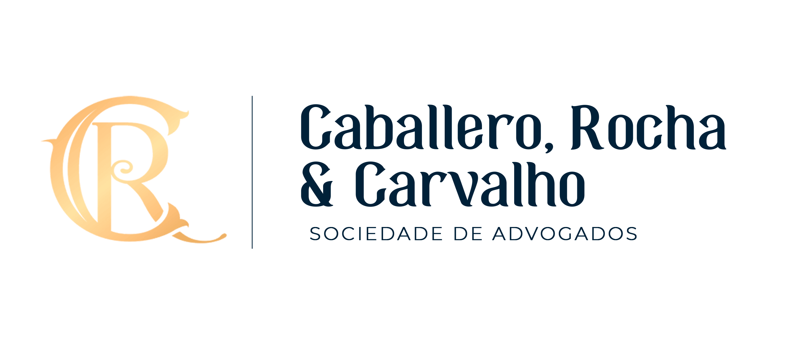

Este documento padroniza o fluxo de trabalho do bot que recebe as conversas do WhatsApp do escritório (via Zernio), analisa cada atendimento com Inteligência Artificial e cadastra automaticamente o contato e o negócio no CRM Moskit. Vai do recebimento da mensagem até a movimentação do negócio no funil de vendas e o agendamento da consulta no Google Agenda, passando pela classificação do lead, pela extração dos dados do caso e pela verificação do comprovante de pagamento.
Antes de tudo, o bot já descarta automaticamente as conversas dos sócios e da equipe (nunca tratadas como lead) e só avança para o cadastro no CRM quando a Inteligência Artificial identifica interesse real de contratação — spam, número errado e conversa interna não geram nada no CRM.
|
Fluxo | Bot de Qualificação de Leads via WhatsApp
|
|
iii
Visão geral do fluxo
1
Recepção da mensagem
Zernio entrega em tempo real as mensagens do cliente e da equipe.
2
Buffer de inatividade
Aguarda 5 minutos sem mensagem nova antes de analisar a conversa.
3
Classificação do lead
IA decide se a conversa é um lead viável ou deve ser descartada.
AUTOMATIZADO — IA
4
Extração dos dados
IA extrai os campos do CRM, a data da consulta e o estágio do funil.
AUTOMATIZADO — IA
5
Cadastro no Moskit
Busca ou cria o contato e o negócio, com nota de briefing do caso.
6
Verificação do comprovante
IA de visão lê o valor pago e confere com o valor da consulta.
AUTOMATIZADO — IA
7
Pagamento e funil
Move o negócio no funil de vendas conforme o atendimento avança.
8
Agendamento no Google Agenda
Cria o evento quando pagamento e horário estão confirmados.
iv
Detalhamento das etapas
1
Recepção da mensagem
Responsável: Bot — webhook Zernio
O que fazer. A Zernio entrega ao servidor do bot, em tempo real, cada mensagem trocada no WhatsApp do escritório — tanto as recebidas do cliente quanto as enviadas pela equipe (proposta, contrato, informações de valores) — e o bot acumula tudo na conversa daquele contato. A cada 3 minutos uma sincronização periódica varre as conversas recentes, como rede de segurança para qualquer webhook perdido. Documentos
Mensagem de texto ou anexo (imagem/documento) • Identificação do remetente (cliente ou equipe)
Checklist
É sócio ou equipe?. Os telefones dos sócios e da equipe nunca são tratados como
lead — a conversa é descartada automaticamente deste fluxo, sem gerar contato nem negócio no CRM.
2
Buffer de inatividade
Responsável: Bot
O que fazer. A cada mensagem nova o temporizador de 5 minutos é reiniciado. Só quando o cliente (ou a equipe) para de escrever por esse tempo o bot considera a conversa “pronta” e dispara a análise — evita processar mensagem por mensagem e analisa o atendimento inteiro de uma vez. Checklist
ATENÇÃO. O tempo de inatividade é o que separa uma conversa em andamento de uma conversa
encerrada. Mudar esse valor muda o momento em que todo o restante do fluxo dispara.
3
Classificação do lead
Responsável: Inteligência Artificial
O que fazer. Antes de extrair qualquer dado, a IA lê a conversa inteira e decide, de forma objetiva, se aquilo é um lead com potencial real de contratação. Checklist
Lead viável?. Spam, número errado, conversa interna da equipe ou cliente já
existente apenas confirmando algo → classificado como inviável, e nada é criado no CRM.
4
Extração dos dados
Responsável: Inteligência Artificial
O que fazer. Para os leads viáveis, a IA extrai os campos obrigatórios do CRM e decide a ação mais adequada: criar negócio, atualizar campos, adicionar nota, aguardar mais informações ou ignorar. Dados extraídos
Origem • Tipo de consulta • Área do direito • Advogado responsável • Captação • Pagamento
confirmado • Data e hora da consulta • Email do cliente • Resumo do atendimento • Estágio de funil sugerido
Checklist
AUTOMATIZADO. O advogado responsável é sempre definido pela área do direito do caso, nunca
pelo nome do lead nem por qual sócio ele mencionou na conversa.
Confiança suficiente?. Confiança da IA abaixo de 6/10 na ação “criar” é tratada
como “ignorar” — proteção contra alucinação da IA.
5
Cadastro no Moskit
Responsável: Bot
O que fazer. O bot busca ou cria o contato no Moskit pelo telefone, cria ou atualiza o negócio com os campos personalizados mapeados e adiciona uma nota com o briefing do caso, para o advogado se preparar antes da consulta. Checklist
ATENÇÃO. A busca por telefone exige no mínimo 8 dígitos coincidentes — evita reaproveitar
por engano o contato errado e duplicar histórico no CRM.
6
Verificação do comprovante
Responsável: Inteligência Artificial de visão
O que fazer. Ao receber uma imagem do cliente, o bot baixa o arquivo e usa Inteligência Artificial de visão para ler o valor pago, comparando com o valor da consulta (R$ 350,00, aceitando o acréscimo do pagamento por cartão). Documentos
Imagem do comprovante enviada pelo cliente
Checklist
Valor confere?. O comprovante só é considerado válido quando a IA identifica que é
mesmo um comprovante, com confiança de pelo menos 7/10, e o valor lido é igual ou maior que R$ 350,00. Não
passando em algum desses critérios, o negócio NÃO é movido e a equipe é avisada para revisar manualmente.
7
Pagamento e funil
Responsável: Bot
O que fazer. Confirmado o pagamento com o comprovante batendo, o negócio é movido para o estágio “Consulta Agendada”. A IA também analisa as mensagens (inclusive as da equipe) buscando sinais de avanço no funil completo — proposta de honorários, negociação, contrato. Checklist
ATENÇÃO. O avanço automático além de “Consulta Agendada” está em modo de conferência: a IA
apenas anota a sugestão no negócio, sem mover de verdade, até a equipe validar o comportamento.
8
Agendamento no Google Agenda
Responsável: Bot
O que fazer. Quando o pagamento e a data e hora da consulta são confirmados na mesma leitura da IA, o bot cria automaticamente o evento no calendário único do escritório — autenticado por OAuth2 com uma conta real da equipe — já com um link do Google Meet gerado junto, e avisa a equipe pelo Telegram com esse link. Pedindo o cliente para remarcar depois, o bot atualiza o mesmo evento em vez de criar um novo, mantendo o link do Meet. Documentos
Data e hora da consulta confirmadas • Email do cliente (se informado)
Checklist
FECHAMENTO. O convite por email ao cliente só é enviado se ele tiver informado o próprio
email na conversa — o link do Meet é sempre criado, mas o Google só avisa quem está cadastrado como participante
do evento.
v
Ferramentas e premissas fixas
|